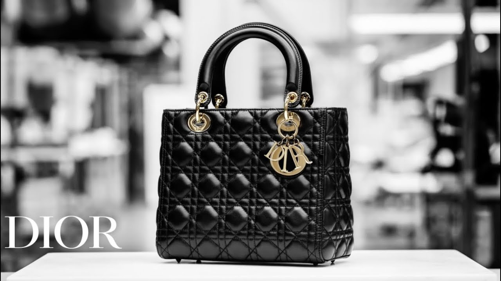

<div class="container mt-5">
  <div class="card">
    <div class="head"style="margin: 20px;">
      <h2>Rate The Product of Dior Bags</h2>
    </div>
    <div class="row mt-4" style="margin: 20px;">
      <div class="col-md-6">
        
      </div>
      <div class="col-md-6">
        <h3>THE SAVOIR-FAIRE OF AN ICON</h3>
        <p>A symbol and a legend, the Lady Dior handbag appeared for the first time on the arm of Lady Diana and has since had an extraordinary destiny. 
          With architectural lines exalting the cannage motif, it is a concentration of the House’s excellence. 
          Celebrating the virtuoso craftsmanship of the Ateliers, and reinvented by Maria Grazia Chiuri season after season, 
          the Lady Dior comes to life in Italy thanks to Dior’s petites mains and the beauty of their gestures.</p>
        <ngb-rating [(rate)]="currentRate"></ngb-rating>
        <hr>
        <pre>Rate: <b>{{currentRate}}</b> of 10</pre>
      </div>
    </div>
  </div>
</div>


